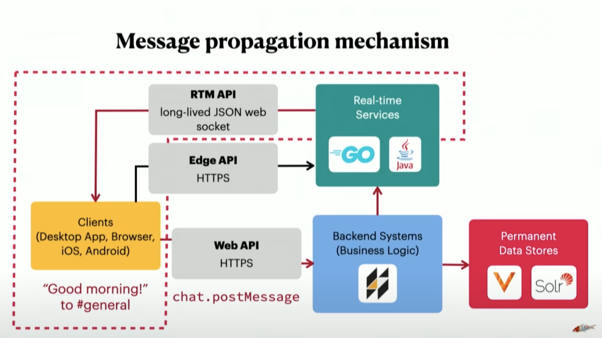

Maude Lemaire is a Sr. Staff Software Engineer @ Slack and technical lead for the backend performance infrastructure team.
Slack didn’t have any load testing tooling. They had a big customer that was putting strain on their infra.
The initial tool (API Blast) just made API requests to the server. It had a few parameters for specifying concurrency, rate limits etc. but that’s it.
- Why did they not use off the shelf tool which already provide these functionalities?
API Blast didn’t test the web-socket stack. The only thing that was tested is ingest. Message propagation wasn’t tested since there were no incoming clients.

- Edge API is for serving data cached in various Points-of-Presence around the world & required instantaneously. (Like the quick switcher, search bar that comes up on ⌘ + K)
- Real time services maintain all active web-socket connections with all users around the world. It organizes those connections by channels.
This worked for a while but a newer customer wanted a channel to house all 300K users where 100K users are likely to be active at the same time.
Slack is susceptible to load-related performance problems in 3 key ways:
- Massive fan-out (users sending messages in big channels )
- Event floods
- Thundering herd
- Eg: If someone posts a message that goes to 100K active users and even 10 users send 1 reaction, those reactions need to be propagated to 100K clients which leads to a 1 million web-socket events.
In mid-2019, they built a tool called Puppet Show.
- Simulated real desktop users by spinning up 1000s of headless chrome browsers logged into Slack (distinct users, distinct token) across a K8s cluster.
- They had a script simulate different actions like switching to a channel & posting a message, switching to another & adding a reaction, trolling Slackbot etc.
- A central component (Puppeteer) oversaw all the puppets. The puppets would check in regularly to update the puppeteer about their state. Puppets would receive a script from Puppeteer and start executing it.
- Sidenote: Don’t confuse Puppeteer with the Node.js library used to control Chromium.
- Pros
- High fidelity. Nothing better than logging into the slack client and executing actions.
- Flexible scripting using Javascript
- Cons
- Costs a lot. For each puppet instance, the cost was 37 cents per day. Running 100K instances would cost 37K USD everyday.
- Spinning up 100K instances took several days and pods would crash frequently.
- Once it was verified that Slack can handle the load, they stopped using this tool.
They signed up a customer (in 2020, around the pandemic) that wanted support for 500K (IBM probably) users in the same Slack instance.
The headless chrome browsers were replaced w/ lightweight client simulators written in Go.
- A koi is a Slack client simulation (single Go routine)
- A school is a collection of koi (single Go program that runs in a single pod on K8s)
- The keeper manages the schools and keeps track of the overall load test state and parameters.
A JSON configuration file needs to be provided when you boot up a load test that tells a “koi” what to do once booted.
Each action is mapped to a probability of being performed. Then there’s a set of implementation w/ each action that the koi should perform with each of those actions.
{
"behaviors": {
"chat.postMessage": {
"frequency": 0.043
}
},
"sequences": {
"chat.postMessage": {
"doc": "Sends a message to a random channel.",
"steps": [
...
]
}
}
}
Every tick (configurable but 1s by default), a koi runs through its entire configuration and performs the actions based on their odds.
This was good enough to simulate massive fan-out and event floods but not thundering herds since they couldn’t simulate coordinated behavior. That’s why they have “formations” that allows specifying the percentage of users participating over a period of time.
{
"formations": [
{
"name": "Populate announcement channel with reactions",
"begin_within_secs": 30,
"percent": 1.0,
"sequence": {
"steps": [
...
]
}
}
]
}
A koi cost 0.1 cents to run per day.